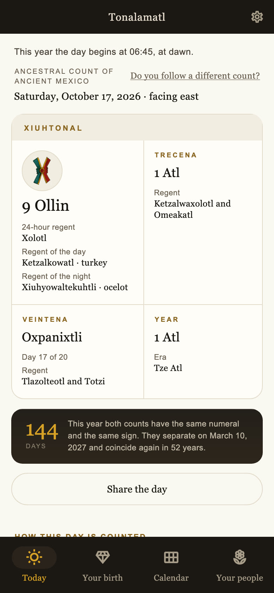
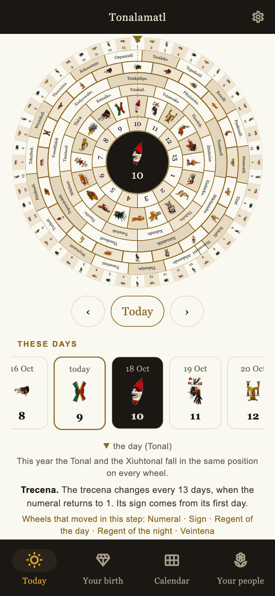
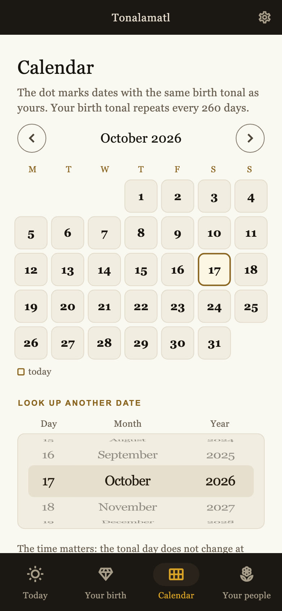

A living tradition from ancient Mexico
The timekeeping tradition of ancient Mexico.
The meaning of each day, the cycles that shape it, and your birth Tonal. A living tradition, explained in everyday language.
For Android and iPhone · In English and Spanish

The calendar, today
Today in the calendar.
Gregorian date
Ancestral Count
The experience
Each day, in all its detail.
Gregorian dates alongside the Tonal and Xiuhtonal. Each element has its place and its own explanation.

01 / Tonalamatl
The meaning of the day
The Tonal, Xiuhtonal, trecena, veintena, and their regents. Each reading explores what the day favors, its challenge, its shadow, and its work.

02 / Tonalamatl
The cycles, made visible
Seven wheels show how the calendar advances. When you change the day, the wheels and the selected date update together.

03 / Tonalamatl
A date, a different perspective
Look up dates from year 0 to 5000. Explore your birth date’s traditional interpretation and save the birthdays of people in your life.
Actual app screenshots. The dates shown are examples.

The Origins of Our Timekeeping
That knowledge
lives on.
Observing the stars, nature, and inner life. A fifty-second film about the origins of our timekeeping tradition.
50 seconds · Narration and subtitles
Understanding the calendar
Unfamiliar words.
Clear explanations.
Tonal and Xiuhtonal
The numeral and sign in two counts: one associated with inner life, and the yearly count.
Trecena and veintena
Thirteen-day and twenty-day cycles that give each date its context.
The three regents
The 24-hour regent, the day regent, and the night regent. Each has its own explanation.
Your birth Tonal
Your birth date’s traditional interpretation, with your birth time if you know it.
The people in your life
A place to save the birth dates of people who matter to you.
Other counts
Four alternative correlations let you look up a date according to the count you follow.
Tonalamatl on your phone
A living teaching.
At your own pace.
The texts present the teachings of a living oral tradition in Mexico. They include daily reflections and traditional interpretations of birth dates.
The app describes the day. It does not predict personal events or anyone’s future.
13 days of full access
$269 MXN / month
Monthly price in Mexico · Tax included
Afterward, the day’s overview remains available. A subscription provides continued access to the full texts and date lookups.
Subscribe through your phone’s store. The subscription renews automatically and can be canceled through the store. Prices in other currencies are displayed before purchase.
Questions
Before you begin.
Do I need to know the calendar?
No prior knowledge is needed. The app explains each day sign, numeral, and cycle.
What happens after thirteen days?
The introductory access period is counted per device. Afterward, each day’s overview and the beginning of each section remain visible. A subscription unlocks the full texts.
Why does my birth time matter?
The day in this count does not change at midnight. Your birth time places your birth before or after that boundary. You can look up your birth date even if you do not know the time.
Where do the explanations come from?
They present the teachings of a living oral tradition in Mexico. Nahuatl terms are preserved within the explanations.
Can I watch the film again?
Yes. The Origins of Our Timekeeping is available in the app and on this website. You can share a link to the full film.